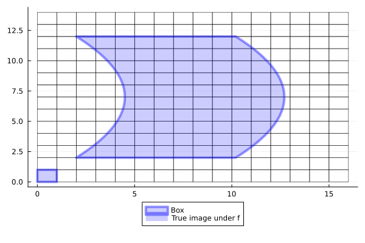

An Overview of BoxMap Types
There are multiple techniques one could use to discretize point maps into maps over boxes. In General Usage the discretization BoxMap was already briefly introduced.
GAIO.BoxMap — TypeBoxMap(map, domain) -> SampledBoxMapTransforms a $map: Q → Q$ defined on points in the domain $Q ⊂ ℝᴺ$ to a SampledBoxMap defined on Boxes.
By default uses adaptive test-point sampling. For SIMD- and GPU-accelerated BoxMaps, uses a grid of test points by default.
We now introduce a set of BoxMap subtypes for different discretization algorithms. The types fit into a heirarchy described in the diagram below.

We will work from the "bottom up", starting with specific types that are of practical use, and then generalizing these approaches for the reader who wishes to know more.
Example
In the following, we will use a simple but expanding map to demonstrate various BoxMap discretizations
using GAIO
using Plots
# We choose a simple but expanding map
const α, β, γ, δ, ω = 2., 8.2, 10., 2., 10.
f((x, y)) = (α + β*x + γ*y*(1-y), δ + ω*y)
midpoint = round.(Int, ( 1+(α+β+γ/4)/2, 1+(δ+ω)/2 ), RoundUp)
domain = Box(midpoint, midpoint)
P = BoxGrid(domain, 2 .* midpoint)
p = plot(
cover(P, :),
linewidth=0.5, fillcolor=nothing, lab="",
leg=:outerbottom
)
# unit box
B = cover(P, (0,0))
p = plot!(
p, B,
linewidth=4,
fillcolor=RGBA(0.,0.,1.,0.2),
linecolor=RGBA(0.,0.,1.,0.4),
lab="Box"
)
# Plot the true image of B under f.
z = zeros(100)
boundary = [
0 0;
1 0;
z.+1 0.01:0.01:1;
0 1;
z 0.99:-0.01:0;
]
b = f.(eachrow(boundary))
boundary .= [first.(b) last.(b)]
p = plot!(
p,
boundary[:, 1], boundary[:, 2],
linewidth=4, fill=(0, RGBA(0.,0.,1.,0.2)),
color=RGBA(0.,0.,1.,0.4),
lab="True image under f"
)